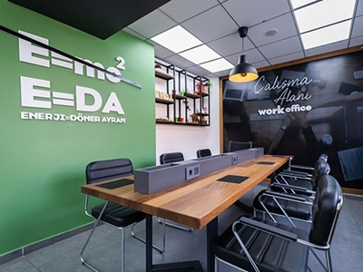
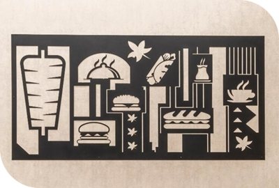

Nesilden Nesile Bir Baþarý Öyküsü;
Dönere yýllardýr imzamýzý atýyoruz. 2002 Yýlýndan Bu Yana Ankaranýn Deðiþmeyen ve Büyüyen Lezzetiyiz. - 2005 Araba Pazarýnda 4 Döner Çadýrý - 2007 Yýlýnda 3 çalýþan ile Yaprak Dönercisi Kuruldu. - 2012 Yýlý Merkez Binamýz - 2015 14 Þube 140 Çalýþan - 2022 32 Þube 325+ Çalýþan
Milyonlara Ulaþan Müþterilerimizle Büyüyoruz..
Biz ne tür bir iþ yapýyoruz?
- Ankara’da 30, Ýstanbul'da 1, Kýrýkkale'de 1 noktalarýnda bulunan bir hizmet saðlayýcýsýyýz. Bir dönerciden daha öteyiz.
Hedef kitlemiz kim?
-Gencinden yaþlýsýna tüm halkýmýza ulaþýlabilir bir noktada en kaliteli hizmeti saðlýyoruz.
Müþterilerimize ne tür bir hizmet saðlýyoruz?
-Müþterilerimizin memnuniyetini ön planda tutarak tüm þubelerimizde; 1) Sýcak çayýnýzýn yanýnda sýcak bir ortam oluþmasýný saðlýyoruz. 2) Gençlerimiz ve iþ insanlarýmýz için saðladýðýmýz ücretsiz Wifi hizmeti ile onlarý dünyaya baðlýyoruz. 3) En deðerlilerimiz miniklerimiz için hazýrladýðýmýz oyun alanlarýmýz ile onlarýn geliþimine ve eðlencesine önem veriyor. Aileleri ile geçirebilecekleri güzel günler sunuyoruz. 4) Bizlerden uzun süre ayrýlamayacaðýnýzý bildiðimizden sizleri merak edenler için size ücretsiz þarj ünitesi hizmeti sunuyoruz.
Size deðer veriyoruz, deðer katýyoruz.
Umutlarýmýz ve hayallerimiz neler?
-Yurtiçinde markamýzý ulaþýlabilir ve kaliteli bir þekilde temsil etmek. Global düzeyde bir marka haline gelmek.
Þirket odaðýnýz nedir?
-Hizmet odaklýyýz; Baþarýnýn memnuniyet ile geleceðini düþünüyoruz. Þirket olarak görüþlerinize deðer veriyoruz.
Kimleri ve neleri deðiþtirme konusunda ilham veriyoruz?
-Her þey deðiþebilir amacýmýz kalite ve memnuniyeti ulaþýlabilir seviyede herkese saðlamak.